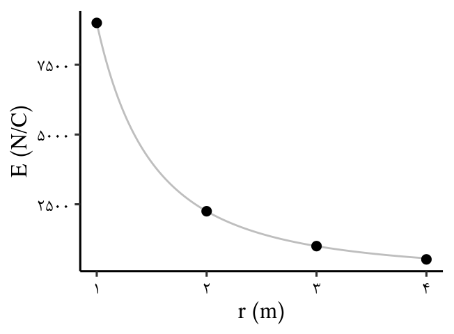

میدان الکتریکى حاصل از یک ذره باردار
تعریف 7 میدان الکتریکى ناشی از ذره اى با باردار
\[ \vec{E} = k \cfrac{|q|}{r^2} \]
\[ \overset{q}{{\Huge\bullet}} \underset{r}{\underbrace{--------}} \overset{q_0}{{\large.}} \overset{\vec{E}}{\longrightarrow} \]
جهت میدان بار الکتریکی، همان جهت نیرویی است که به بار آزمون در هر نقطه قرار گیرد وارد میشود.
مثال 23 میدان حاصل از بار \(2 \mu C\) در فاصلهی یک متر با چند \(\frac{N}{C}\) است؟
نمایش پاسخ
\[ \require{cancel} \begin{aligned} E & = k \cfrac{|q|}{r^2} \\ E & = 9 \times 10^9 \cfrac{N.\cancel{m^2}}{C^\cancel{2}} \times \cfrac{20 \times 10^{-6} \cancel{C}}{1 \cancel{m^2}} \\ & = 1.8 \times 10^{5} \frac{N}{C} \end{aligned} \]تعریف 8 آزمایشگاه مجازی میدان الکتریکی
مولّد وان دوگراف وسیلهای است که با استفاده از تسمه ای متحرک، بار الکتریکی را بر روی یک کلاهک تو خالی فلزی جمع می کند.
شکل 19: مولد وان دوگراف
آزمایشگاه مجازی مولد وان دوگراف
مثال 24 فرض کنید کلاهک مولد وان دوگراف، کره ای با شعاع \(0.1m\) است و باری به بزرگی \(1 \mu C\) روی آن جمع می شود. با فرض آنکه ٔ همه این بار در مرکز کره قرار داشته باشد، بزرگی میدان الکتریکی این بار را در فاصلههای \(1 m\)، \(2 m\)، \(3 m\) و \(4 m\) از مرکز کره به دست آورید و سپس با نقطهیابی، نمودار بزرگی میدان الکتریکی را برحسب فاصله از مرکز کره رسم کنید.
نمایش پاسخ
\[ \require{cancel} \begin{aligned} E & = k \cfrac{|q|}{r^2} \\ E_1 & = 9 \times 10^9 \cfrac{N.\cancel{m^2}}{C^\cancel{2}} \cfrac{1 \times 10^{-6} \cancel{C}}{1 \cancel{m^2}} = 9 \times 10^{3} \frac{N}{C} \\ E_2 & = 9 \times 10^9 \cfrac{N.\cancel{m^2}}{C^\cancel{2}} \cfrac{1 \times 10^{-6} \cancel{C}}{4 \cancel{m^2}} = 2.25 \times 10^{3} \frac{N}{C} \\ E_3 & = 9 \times 10^9 \cfrac{N.\cancel{m^2}}{C^\cancel{2}} \cfrac{1 \times 10^{-6} \cancel{C}}{9 \cancel{m^2}} = 1 \times 10^{3} \frac{N}{C} \\ E_4 & = 9 \times 10^9 \cfrac{N.\cancel{m^2}}{C^\cancel{2}} \cfrac{1 \times 10^{-6} \cancel{C}}{16 \cancel{m^2}} = 0.5625 \times 10^{3} \frac{N}{C} \\ \end{aligned} \]
مثال 25 با توجه به شکل، چرا شعله شمع نزدیکتر به سمت کلاهک واندوگراف کشیده شده است؟
شکل 20: مولد وان دوگراف و شمع
نمایش پاسخ
شکل 21: مولد وان دوگراف و شمع
مثال 26 طبق مدل بور برای اتم هیدروژن، در حالت پایه فاصله الکترون از پروتون هسته برابر با \(5.3 \times 10^{-11}\) است.
الف) اندازه میدان الکتریکی ناشی از پروتون هسته را در این فاصله تعیین میکنید.
نمایش پاسخ الف
\[ \require{cancel} \begin{aligned} E & = k \cfrac{|q|}{r^2} \\ E_p & = 9 \times 10^9 \cfrac{N.\cancel{m^2}}{C^\cancel{2}} \cfrac{\cancelto{1.5}{1.6} \times 10^{-19} \cancel{C}} {(\cancelto{\simeq 5}{5.3} \times 10^{-11})^2\cancel{m^2}} \\ & = \cancelto{\cancelto{5 \times 10^{-1}}{0.5}}{\cfrac{13.5}{25}} \times 10^{9 - 19 + 22} \frac{N}{C} \\ & \simeq 5 \times 10^{11} \frac{N}{C} \end{aligned} \]ب) در چه فاصلهای از پروتون هسته، بزرگی میدان الکتریکی برابر با بزرگی میدان الکتریکی حاصل از مولدواندوگراف مثال پیش در فاصله \(1 m\) از مرکز کلاهک آن است.
نمایش پاسخ ب
\[ \require{cancel} \begin{aligned} E_1 & = E_p = k \cfrac{|q|}{r^2} \\ \bcancel{9} \times \cancel{10^3} \cancel{\frac{N}{C}} & = \bcancel{9} \times 10^\cancelto{6}{9} \cfrac{\cancel{N}.m^2}{\cancel{C^2}} \cfrac{1.6 \times 10^{-19} \cancel{C}}{r^2} \\ r^2 & = 1.6 \times 10^{-13} m^2 \\ r & = \boxed{4 \times 10^{-7} m} = 400 nm\\ \end{aligned} \]برآیند میدان های الکتریکی
روش 7 برآیند میدان های الکتریکی
میدان الکتریکی ناشی از چند بار الکتریکی در نقطه ای از فضا، برابر مجموع میدان هایی است که هر بار در ِنبود سایر بارها در آن نقطه از فضا ایجاد می کند؛
شکل 22: اصل برآیند میدان الکتریکی
\[\vec{E} = \vec{E_{1}} + \vec{E_2} + \dots\]
مثال 27 شکل زیر، آرایشی از دو بار الکتریکی هماندازه و غیرهمنام (دوقطبی الکتریکی) را نشان می دهد که در آن فاصله دو بار از هم \(6cm\) است. میدان الکتریکی خالص را در نقطهای \(O\) و \(M\) به دست آورید.
\[ \overset{q_1 = -2nC}{{\Huge\circ}} \underset{3cm}{---} \overset{O}{{\LARGE.}} \underset{3cm}{---} \overset{q_2 = 2nC}{{\Huge\bullet}} \underset{3cm}{---} \overset{M}{{\LARGE.}} --- \longrightarrow x \]
نمایش پاسخ
\[ \overset{q_1}{{\Huge\circ}} E_O\overset{E_2\leftarrow}{\underset{E_1\leftarrow}{\longleftarrow}} \overset{O}{{\LARGE.}}---\overset{q_2}{{\Huge\bullet}} -\underset{E_1\leftarrow}{--}\overset{M}{{\LARGE.}} \overset{\rightarrow E_2}{\longrightarrow}E_M \longrightarrow x \]
\[ \require{cancel} \begin{aligned} \vec{E}_{O} & = - E_{O1} \vec{i} - E_{O2} \vec{i} \\ & = - 2 k \frac{|q|}{r^2} \vec{i} \\ & = - 2 \times 9 \times 10^{9} \times\cfrac{N.\cancel{m^2}}{C^\cancel{2}}\times \frac{2\times 10^{-9}\cancel{C}}{9\times 10^{-4}\cancel{m^2}}\vec{i} \\ & = \boxed{- 4 \times 10^{4} \frac{N}{C} \vec{i}} \\ \vec{E}_{M} & = - E_{O1} \vec{i} + E_{O2} \vec{i} \\ & = - k \frac{|q_1|}{r_1^2} \vec{i} + k \frac{|q_1|}{r_2^2} \vec{i} \\ & = k |q| (-\frac{1}{r_1^2}+\frac{1}{r_2^2}) \vec{i} \\ & = 9 \times \bcancel{10^{9}} \times \cfrac{N.\cancel{m^2}}{C^\cancel{2}} \times 2 \times \bcancel{10^{-9}} \cancel{C} ( - \frac{1}{81 \times 10^{-4} \cancel{m^2}} + \frac{1}{9 \times 10^{-4} \cancel{m^2}} ) \vec{i} \\ & = \frac{\cancel{9} \times 2 \times 8}{\cancelto{9}{81}} \times \frac{N}{C} \vec{i} \\ & \simeq 1.8 \times 10^{4} \frac{N}{C} \vec{i} \\ \end{aligned} \]